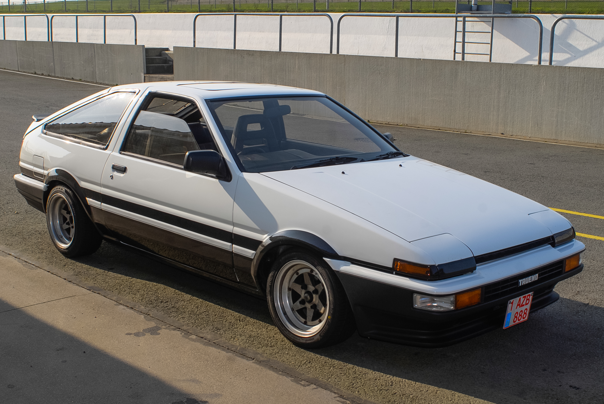
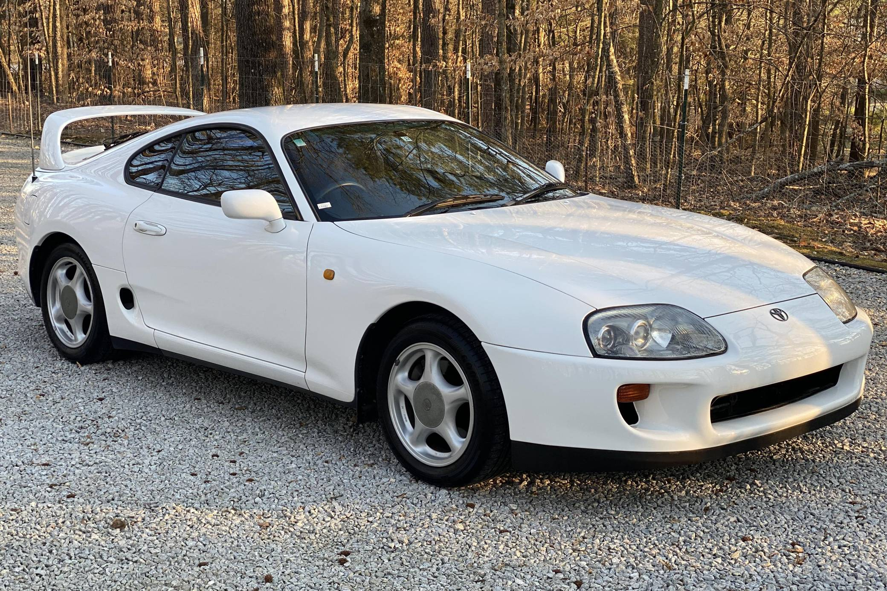

Toyota
AE86 and Supra
Toyota AE86

AE86 Characteristics
- Model: Corolla Levin / Sprinter Trueno AE86
- Body type: 2-door coupe / hatchback
- Drive: Rear-wheel drive
- Transmission: 5-speed manual
- Focus: Lightweight handling and drift culture
About AE86
Toyota AE86 became legendary for its balance, simple mechanics, and strong influence on Japanese street and motorsport culture.
Toyota Supra

Supra Characteristics
- Model: Supra (A80 / Mk4)
- Body type: 2-door coupe
- Drive: Rear-wheel drive
- Transmission: Manual / Automatic
- Focus: Turbo power and tuning potential
About Supra
Toyota Supra is one of the most iconic Japanese sports cars, known worldwide for the 2JZ engine and high performance potential.